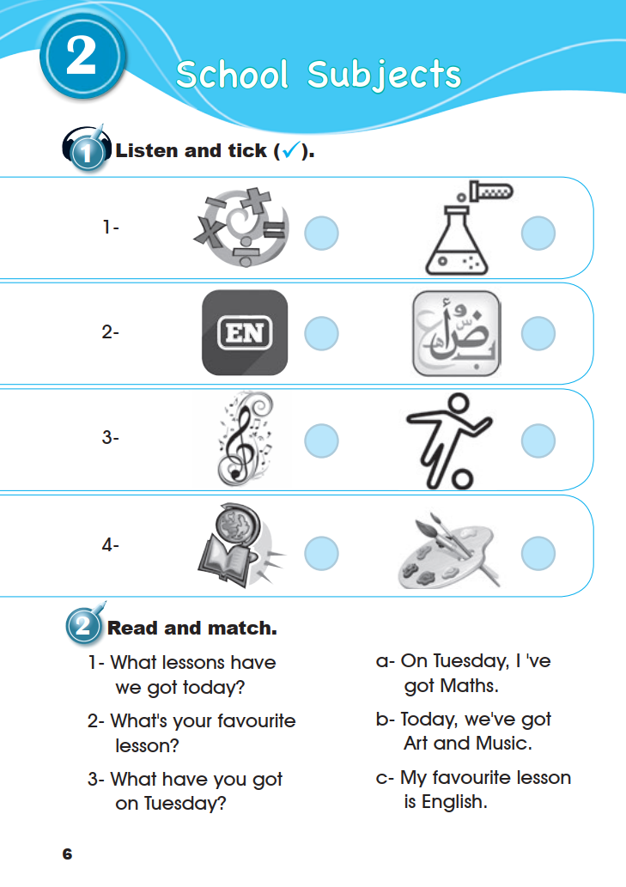

دفتر التدريبات
Workbook · School Subjects · pages 6–8
ستة تمارين بالترتيب الأصلي. يمكنك الكتابة والاختيار هنا؛ الإجابات المستنتجة معلّمة، والإجابة الشخصية لا تُصحّح آليًا.
1. Listen and tick (✓).
لا يظهر مفتاح إجابة لهذا النشاط لأن الصوت غير متوفر.
2. Read and match.

عرض الصفحة الأصلية · Workbook · p. 6
هذه هي الصورة الأصلية كما رُفعت، دون إعادة رسم أو توليد. افتح الصورة بحجمها الكامل للمراجعة.

3. Read and match.

4. Write the missing numbers.

الأعداد المطبوعة بالترتيب: 21 → 22 → … → 24 → … → … → 27 → 28 → … → 30.
عرض الصفحة الأصلية · Workbook · p. 7
هذه هي الصورة الأصلية كما رُفعت، دون إعادة رسم أو توليد. افتح الصورة بحجمها الكامل للمراجعة.

5. Look and complete.

تفريغ تفاعلي للجدول نفسه؛ الصور أدناه مقتطعة من المصدر. رؤوس «الحصة» إضافة تنظيمية وليست نصًا مطبوعًا.
6. Write about yourself.

What’s your favourite lesson?
إجابة شخصية تختلف من تلميذ لآخر؛ لا توجد إجابة واحدة في المصدر ولا تصحيح آلي لها. الكتابة هنا للتدريب فقط، ولا تُرسل إلى المعلم ولا تُحفظ بعد مغادرة الصفحة.
عرض الصفحة الأصلية · Workbook · p. 8
هذه هي الصورة الأصلية كما رُفعت، دون إعادة رسم أو توليد. افتح الصورة بحجمها الكامل للمراجعة.